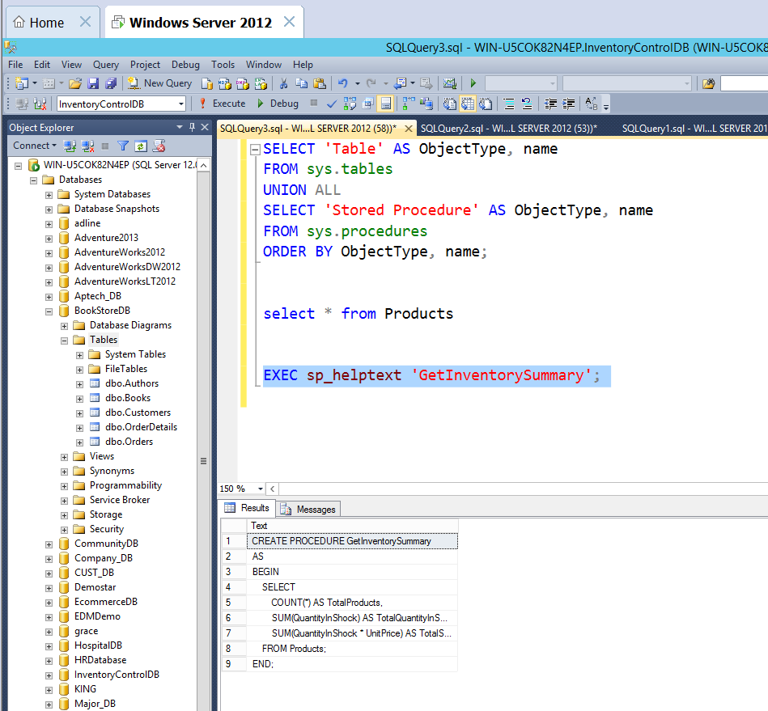
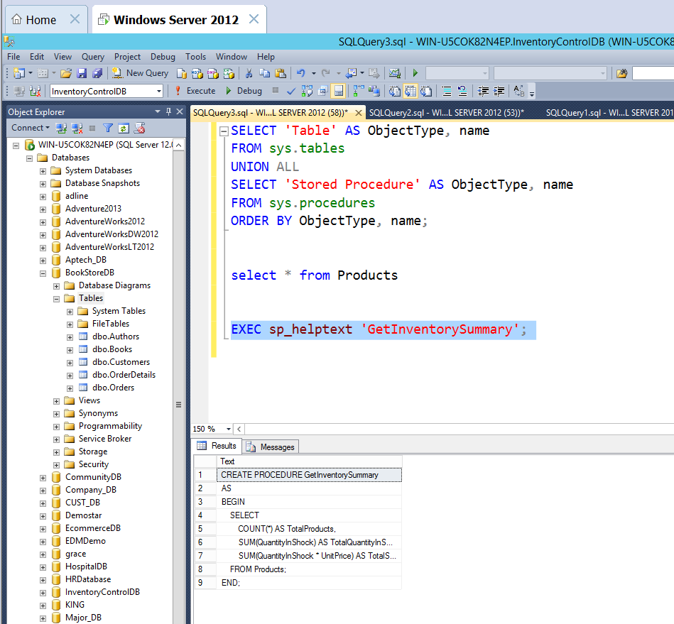

My Projects
Here’s a showcase of my work across database development, web design, and creative projects, each reflecting my passion for building smart, data-driven, and visually appealing solutions.
Database Projects
🎓 Student Records Management System
Manages student records with SQL Server, includes stored procedures for adding, updating, and searching data efficiently.
Tools: SQL Server, T-SQL, Excel
View on GitHub🏥 Hospital Database Management System (HospitalDB)
Manages hospital data such as patients, doctors, appointments, and billing using SQL Server. Includes stored procedures, triggers, and reporting views.
Tools: SQL Server, T-SQL
View on GitHub📚 Bookstore Database Management System
Manages book records, stock, customer orders, and sales using SQL Server. Includes stored procedures for adding, updating, and deleting books, as well as retrieving customer orders. Ensures efficient bookstore operations through structured database design.
Tools: SQL Server, T-SQL
View on GitHub📦 Inventory Control System
Efficiently manages product stock levels, sales transactions, and inventory reports using SQL Server. Includes stored procedures such as AddProduct, UpdateProductStock, DeleteProduct, and GetLowStockProducts. Ensures accurate tracking and recovery of inventory data for seamless operations.
Tools: SQL Server, T-SQL
View on GitHub 

Hospital Management Dashboard (Power BI)
Designed an interactive Power BI dashboard for hospital data visualization, showing appointment trends, doctor performance, and patient demographics.
- 🎯 Purpose: Visualize and analyze hospital appointment data.
- 📊 Visuals: Gender distribution, doctor appointments, tables, and slicers.
- 🧮 Measures: Created Total Appointments Count and other KPIs.
- 🎨 Layout: Organized with color-coded visuals and clear titles.

{kind=link}
{kind=link}
Web Development Projects
🌐 Personal Portfolio V1
My first personal website, a simple HTML and CSS-based layout highlighting my journey in tech.
Tools: HTML, CSS, GitHub Pages
🔗 View on GitHub💫 Personal Portfolio V2
Improved portfolio version with a refined color scheme and section transitions.
Tools: HTML, CSS, JavaScript
🔗 View on GitHub💻 Personal Portfolio Web Page
A responsive personal portfolio website showcasing my projects, skills, and contact details built with pure HTML and CSS for structure and design.
Tools: HTML5, CSS3, JavaScript
View on GitHub📸 Mobile Photography Showcase
A creative webpage displaying my mobile photography collection, organized by themes with responsive image layout and subtle hover effects.
Tools: HTML5, CSS3
View on GitHub